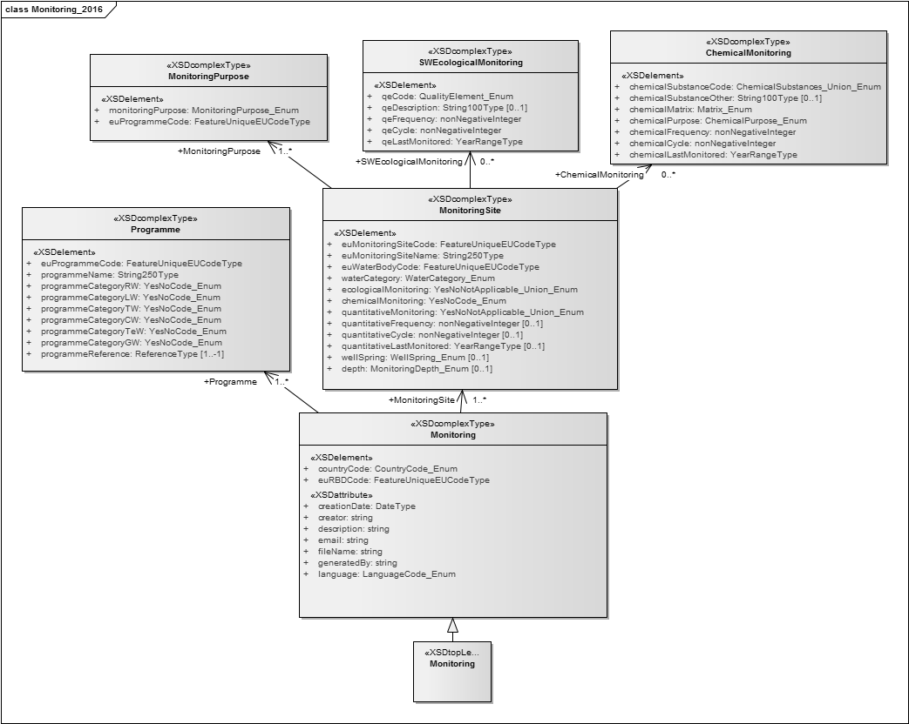
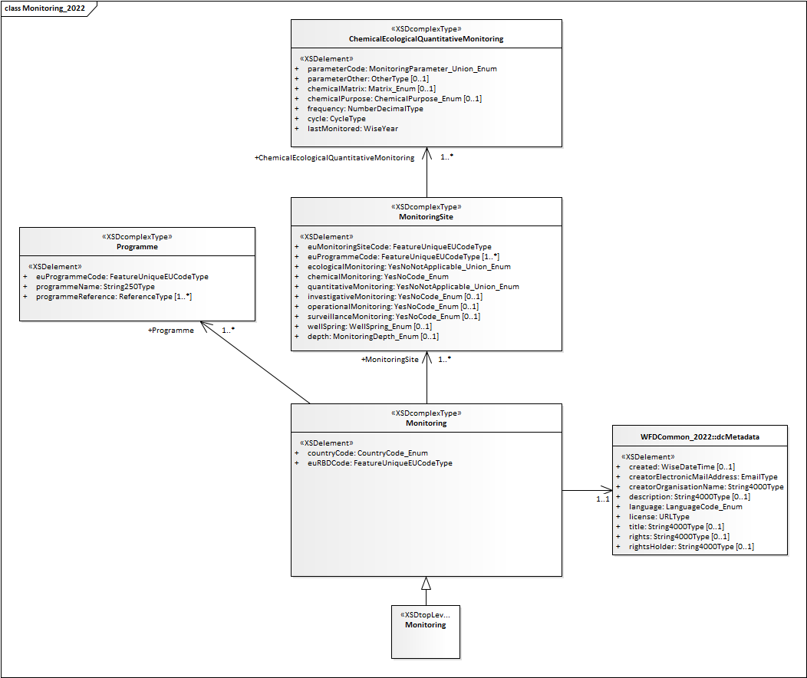

Monitoring#
Last updated: 2026-08-24
Warning
The online version of the text is being reviewed.
Purpose and overview#
This section revises the reporting of information related to Monitoring Programmes in the 2nd and 3rd cycle of reporting of the Water Framework Directive River Basin Management Plans. It presents a proposal for the electronic reporting in the 4th cycle. It also revises the associated spatial data in the MonitoringSite dataset.
Monitoring_2016 - 2nd cycle#
The 2016 WFD reporting guidance [1] clarifies that the information requested in the Monitoring_2016 schema, in accordance to Article 8 of the WFD, refers to past monitoring, and not to planned monitoring.
The 2016 WFD reporting guidance document highlights the connection to the EEA voluntary dataflows, and the expectation that Member States report the monitoring results under the WISE SoE dataflows. This would have allowed the requested information to be derived from the WISE SoE dataflows, thus making redundant the electronic reporting under the RBMPs.
Reporting should reflect the monitoring carried out that has informed the second RBMPs. Given that monitoring programmes are usually dynamic and multi‐annual (i.e. in the cases of quality elements with lower frequencies of monitoring), reporting should reflect, as accurately as possible, the monitoring that has informed the preparation of the second RBMPs. Reporting is not intended to include information regarding future monitoring programmes or planned changes.[…]
The data and information on monitoring to be reported under Article 8 of the WFD include a description of the monitoring sites, a specification of the different QEs and chemical substances monitored at each site, and information relating to the associated monitoring programmes.[…]
Member States are expected to report to EEA WISE SoE:
Water quality results including Priority Substances and River Basin Specific Pollutants to EEAs Waterbases on groundwater, rivers, lakes, transitional waters and coastal waters
Results from monitoring Biological Quality Elements to EEAs Waterbases on rivers, lakes, transitional waters and coastal waters.
—Excerpts from 2016 WFD Reporting Guidance for the 2nd cycle (pg. 93-100) [1]
In 2016, the WISE SoE dataflows were under revision. Therefore, information about the monitoring programmes was requested in the WFD electronic reporting (see Figure 8).
{kind=link}

Figure 8 Monitoring_2016 schema - 2nd cycle - Obsolete#
Monitoring_2022 - 3rd cycle#
The 2022 WFD reporting guidance [2] reiterates that the content of the Monitoring_2022 schema refers to past monitoring, and not to planned monitoring, with exceptional cases allowed for (see excerpt below).
The 2022 WFD reporting guidance document also highlights the connection to the EEA voluntary dataflows, and the expectation that Member States report the monitoring results under the WISE SoE dataflows.
Reporting should reflect the monitoring that was carried out and informed the third RBMPs. It is not intended to include information regarding future monitoring programmes. It can include planned changes when sufficient information is already available on the QEs, substances or parameters that will be monitored and at which frequency. In these cases, the date of the last monitoring should be reported as ‘9999’, as mentioned in the specific guidance below.[…]
The data and information on monitoring to be reported under Article 8 of the WFD include a description of the monitoring sites, a specification of the different QEs and chemical substances monitored at each site, and information relating to the associated monitoring programmes.[…]
Member States are expected to report to EEA WISE SoE:
Water quality results, including Priority Substances and River Basin Specific Pollutants, to Waterbases on groundwater, rivers, lakes, transitional waters and coastal waters
Results from monitoring Biological Quality Elements to Waterbases on rivers, lakes, transitional waters and coastal waters
—Excerpts from the 2022 WFD Reporting Guidance for the 3rd cycle (pg. 90-97) [2]
For the 3rd cycle reporting, in 2022, the analysis of the content of the WISE SoE reporting showed gaps in the completeness of the voluntary reporting of monitoring results for water quality: it would not have been possible to derive the requested monitoring information from the EEA Waterbases. Therefore, the Monitoring_2022 schema was simplified (see Figure 9), but kept in the electronic reporting.
{kind=link}

Figure 9 Monitoring_2022 schema - 3rd cycle - Obsolete#
Proposed structure - 4th cycle#
In preparation on the 4th cycle reporting, an analysis of the current content of the WISE SoE reporting was done again. (See for example Monitoring of CAS_1912-24-9 - Atrazine)
The European coverage of the WISE SoE reporting remains fragmentary,
but some Member States provide detailed and abundant data
that likely reflects the existing WFD monitoring programmes.
For such Member States, the reporting of derived statistics about sampling frequency and period
would constitute duplicate reporting and an unnecessary reporting burden.
Therefore, for the 4th cycle of reporting, the requested information is simplified (see Figure 9).
---
config:
class:
hideEmptyMembersBox: true
layout: dagre
theme: neutral
---
classDiagram
direction TB
class dcMetadata{<<documents>>}
class Reference{<<documents>>}
class Document {<<documents>>}
class Monitoring{<<descriptive>>}
class MonitoringPurpose{<<descriptive>>}
class MonitoringProgrammes{<<descriptive>>}
class MonitoringSite{<<spatial>>}
dcMetadata ..> Document
Reference ..> Document
MonitoringProgrammes ..> Reference
MonitoringSite "1" -- "1..3" MonitoringPurpose
Monitoring "0..n"-- "1" MonitoringSite
classDef default fill:white,stroke:#000;
classDef forFixing fill:white,stroke:#f00;
Figure 10 Monitoring dataflow - overview - 4th cycle#
Descriptive dataset - 4th cycle#
MonitoringProgrammes table#
The information about the monitoring programmes is provided in the RBMP documents:
only the reference to the supporting documents is requested
in the MonitoringProgrammes table (see Figure 11).
---
config:
class:
hideEmptyMembersBox: true
layout: dagre
theme: neutral
---
classDiagram
direction LR
class MonitoringProgrammes{
+ euRBDCode: wiseIdentifier
+ useWaterbaseForMonitoringData: YesNo
+ programmesReference: referenceCode
+ investigativeMonitoringReference: referenceCode
+ operationalMonitoringReference: referenceCode
+ surveillanceMonitoringReference: referenceCode
+ gwChemicalMonitoringReference: referenceCode [0..1]
+ gwQuantitativeMonitoringReference: referenceCode [0..1]
+ swChemicalMonitoringReference: referenceCode [0..1]
+ swEcologicalMonitoringReference: referenceCode [0..1]
}
classDef default fill:white,stroke:#000;
classDef forFixing fill:white,stroke:#f00;
Figure 11 Descriptive data - Monitoring Programmes - 4th cycle#
The following conditions apply:
The
MonitoringProgrammestable must have one record for each of the river basin districts being reported (i.e. wheredcMetadata.includesMonitoringData = 'yes', see Documents dataset - 4th cycle), identified by itseuRBDCode.The
gwChemicalMonitoringReference
must be reported for every river basin district with designated groundwater bodies.The
gwQuantitativeMonitoringReference
must be reported for every river basin district with designated groundwater bodies.The
swChemicalMonitoringReference
must be reported for every river basin district with designated surface water bodies.The
swEcologicalMonitoringReference
must be reported for every river basin district with designated surface water bodies that are not territorial waters.
The useWaterbaseForMonitoringData value defines what needs to be reported in the Monitoring table.
It applies to all surface water monitoring, except Biological Quality Elements (
'QE1%') and Hydromorphological Quality Elements ('QE2%').It applies to all groundwater monitoring except Quantitative Monitoring (
'EEA_00-01-1').
The option useWaterbaseForMonitoringData = 'yes'
indicates that, for all other parameters,
the monitoring data statistics
should be derived from the data reported to Waterbase.
Monitoring table#
A simplified Monitoring table is proposed (see Figure 12).
The
frequencyandcyclevalues are codified, to avoid ambiguities in the reporting and interpretation of results, while maintaining the definitions used in the 2nd and 3rd RBMPs.The
lastMonitoredvalue indicates the last year (until 2027, inclusive) when the parameter was monitored in situ, at that site. If the parameter has never been monitored in past, but will be monitored during the 4th cycle, at that site, report the value 9999.For the 5th cycle of reporting, in 2033, it is expected that information about monitoring parameters, frequency, etc., can be derived from monitoring observations reported under the WISE-2, WISE-6 and WISE-3 dataflows. The derived information would then fully replace the Monitoring table in the RBMP electronic reporting.
---
config:
class:
hideEmptyMembersBox: true
layout: dagre
theme: neutral
themeVariables:
noteBkgColor: lightYellow
noteTextColor: grey
noteBorderColor: grey
---
classDiagram
direction TB
class Monitoring{
+ euMonitoringSiteCode: wiseIdentifier
+ parameterCode: Parameter
+ chemicalMatrix: ChemicalMatrixType [0..3]
+ chemicalPurpose: ChemicalPurpose [0..2]
+ frequency: MonitoringFrequency
+ cycle: MonitoringCycle
+ lastMonitored: gYear
}
class Parameter{
<<enumeration>>
«quantitative monitoring»
EEA_00-01-1 - Quantitative monitoring
«biological quality elements»
QE1-1 - Phytoplankton
QE1-2-1 - Macroalgae
QE1-2-2 - Angiosperms
QE1-2-3 - Macrophytes
QE1-2-4 - Phytobenthos
QE1-3 - Benthic invertebrates
QE1-4 - Fish
«hydromorphological quality elements»
QE2-1 - Hydrological or tidal regime
QE2-2 - River continuity conditions
QE2-3 - Morphological conditions
«CAS codes and EEA codes under WISE-6»
...
}
class ChemicalMatrixType{
<<enumeration>>
water
biota
sediment
}
class ChemicalPurpose{
<<enumeration>>
status
trend
}
class MonitoringFrequency{
<<enumeration>>
continuousSampling
oneSamplePerMonitoringYear
from2To3SamplesPerMonitoringYear
from4To11SamplesPerMonitoringYear
from12To24SamplesPerMonitoringYear
moreThan24SamplesPerMonitoringYear
unknown
}
class MonitoringCycle{
<<enumeration>>
once
onceEvery1Year
onceEvery2Years
onceEvery3Years
onceEvery4Years
onceEvery5Years
onceEvery6Years
onceEvery2RBMPs
onceEvery3RBMPs
unknown
}
Monitoring ..> Parameter
Monitoring ..> ChemicalMatrixType
Monitoring ..> ChemicalPurpose
Monitoring ..> MonitoringCycle
Monitoring ..> MonitoringFrequency
note for Parameter "the label is not part of the code"
classDef default fill:white,stroke:#000;
classDef forFixing fill:white,stroke:#f00;
Figure 12 Descriptive data - Monitoring - 4th cycle#
For the 4th cycle, the following conditions apply:
The
Monitoringtable must always list the surface water monitoring sites for Biological Quality Elements ('QE1%') for every river basin district with designated surface water bodies (except territorial waters).The
Monitoringtable must always list the surface water monitoring sites for Hydromorphological Quality Elements ('QE2%') for every river basin district with designated surface water bodies (except territorial waters).The
Monitoringtable must always list the groundwater monitoring sites for quantitative monitoring ('EEA_00-01-1') for every river basin district with designated groundwater bodies.If, for a given river basin district, the option
useWaterbaseForMonitoringData = 'yes'is reported in theMonitoringProgrammestable, then the monitoring of physico-chemical and chemical parameters must NOT be reported in theMonitoringtable.If, for a given river basin district, the option
useWaterbaseForMonitoringData = 'no'is reported in theMonitoringProgrammestable, then the monitoring of physico-chemical and chemical parameters must be reported in theMonitoringtable.
The quality control requirements defined in the 3rd cycle still apply:
The option
parameterCode = 'EEA_00-01-1'(Quantitative monitoring) is only valid for monitoring sites in groundwater bodies.The option
parameterCode LIKE 'QE1-%'(Biological quality elements) is only valid in rivers, lakes, transitional and coastal water bodies.The
parameterCode LIKE 'QE2-%'(Hydromorphological quality elements) is only valid in rivers, lakes, transitional and coastal water bodies.
With regard to chemical monitoring:
The
chemicalMatrixvalue must be reported if and only if chemical monitoring occurs.For sites in groundwater bodies where chemical monitoring occurs,
chemicalMatrix = 'water'is the only valid option.The
chemicalPurposevalue must be reported if and only if chemical monitoring occurs.For sites in surface water bodies, chemical monitoring includes priority substances and river basin specific pollutants.
For sites in groundwater bodies, chemical monitoring includes priority substances,
the pollutants designated as “river basin specific pollutants” (for surface waters), and any other chemical substances whereparameterCode LIKE 'CAS%'.Some parameters applicable to surface water are NOT valid in groundwater monitoring sites:
EEA_3133-07-1 - Oxidisability
EEA_3133-02-6 - BOD7
EEA_3111-01-1 - Secchi depth
EEA_3161-04-4 - Particulate organic nitrogen
EEA_3164-08-7 - Nitrate to orthophosphate ratio
EEA_3164-07-6 - Total nitrogen to total phosphorus ratio
EEA_3164-01-0 - Chlorophyll a
See the analysis in Groundwater physico-chemical monitoring - Waterbase.
MonitoringPurpose table#
The MonitoringPurpose table indicates if a given monitoring site is part of
surveillance, operational, and/or investigative monitoring
(see Figure 13).
---
config:
class:
hideEmptyMembersBox: true
layout: dagre
theme: neutral
---
classDiagram
direction TB
class MonitoringPurpose{
+ euMonitoringSiteCode: wiseIdentifier
+ monitoringPurpose: WFDMonitoringPurpose [1..3]
}
class WFDMonitoringPurpose{
<<enumeration>>
investigativeMonitoring
operationalMonitoring
surveillanceMonitoring
}
MonitoringPurpose ..> WFDMonitoringPurpose
classDef default fill:white,stroke:#000;
classDef forFixing fill:white,stroke:#f00;
Figure 13 Descriptive data - MonitoringPurpose - 4th cycle#
Codelists - 4th cycle#
For the
ChemicalMatrixTypecodelist, see Figure 12 and Table 1.For the
ChemicalPurposecodelist, see Figure 12 and Table 2.For the
MonitoringCyclecodelist, see Figure 12 and Table 3.For the
MonitoringFrequencycodelist, see Figure 12 and Table 4.For the
WFDMonitoringPurposecodelist, see Figure 13 and Table 5.For the
ParameterCodecodelist, see Figure 13. Only the code (without the label) is used in the reporting. For the chemical and physico-chemical quality elements, the'CAS%'code or'EEA%'code must be used, (and not the'QE3%'code).
Note also that the option'EEA_00-00-0'(Other parameter) will not be available in the 4th cycle of reporting.
Notation |
Label |
Definition and notes |
|---|---|---|
water |
Water |
|
biota |
Biota |
|
sediment |
Sediment |
Notation |
Label |
Definition and notes |
|---|---|---|
status |
Status |
|
trend |
Trend |
Notation |
Label |
Definition and notes |
|---|---|---|
once |
Once |
The monitoring programme will be implemented once per cycle and, depending on the results, future monitoring will be decided. |
onceEvery1Year |
Once every year |
Use this option for parameters measured continuously,
where |
onceEvery2Years |
Once every 2 years |
|
onceEvery3Years |
Once every 3 years |
|
onceEvery4Years |
Once every 4 years |
|
onceEvery5Years |
Once every 5 years |
|
onceEvery6Years |
Once every RBMP (6 years) |
|
onceEvery2RBMPs |
Once every 2 RBMPs (12 years) |
|
onceEvery3RBMPs |
Once every 3 RBMPs (18 years) |
|
unknown |
Unknown |
This option is valid if and only if: |
Notation |
Label |
Definition and notes |
|---|---|---|
continuousSampling |
Continuous sampling |
|
oneSamplePerMonitoringYear |
1 sample per monitoring year |
|
from2To3SamplesPerMonitoringYear |
2 to 3 samples per monitoring year |
|
from4To11SamplesPerMonitoringYear |
4 to 11 samples per monitoring year |
|
from12To24SamplesPerMonitoringYear |
12 to 24 samples per monitoring year |
|
moreThan24SamplesPerMonitoringYear |
More than 24 samples per monitoring year |
|
unknown |
Unknown |
This option is valid if and only if: |
Notation |
Label |
Definition and notes |
|---|---|---|
investigativeMonitoring |
Investigative monitoring |
|
operationalMonitoring |
Operational monitoring |
|
surveillanceMonitoring |
Surveillance monitoring |
Spatial dataset - 4th cycle#
The Spatial dataset contains only the MonitoringSite spatial data (Figure 14).
The following changes have been made to the MonitoringSite spatial table
(in comparison to the 3rd cycle of reporting):
The date values are now requested as simply as YYYY-MM-DD, because that was the format used by the data providers during the previous cycles, and therefore it is not necessary to maintain more variants. This applies to
beginLifespanVersion,endLifespanVersion,operationalActivityPeriodBegin,operationalActivityPeriodEnd.Likewise, the attributes
supersededByIdentifierandsupersededByIdentifierSchemehave been kept for clarity’s sake. In the reported datasets, the values of these attributes will always be NULL. The appropriate value will be derived and included in the published WISE datasets for the 1st, 2nd and 3rd cycle RiverBasinDistrict datasets.Two attributes were removed, because they are no longer required:
relatedToIdentifierandrelatedToIdentifierScheme.The
maximumDepthattribute was removed. Under WISE-6, monitoring results can be reported with their respectiveparameterSampleDepth.The
catchmentAreaattribute was removed. (In the future, it will be possible to derive this value using spatial analysis over the upcoming EU-Hydro drainage direction model.)
---
config:
class:
hideEmptyMembersBox: true
layout: dagre
theme: neutral
---
classDiagram
direction TB
class MonitoringSite{
+ geometry_point: MultiPoint
+ inspireIdLocalId: string254
+ inspireIdNamespace: string254
+ inspireIdVersionId: string25 [0..1]
+ thematicIdIdentifier: wiseIdentifier
+ thematicIdIdentifierScheme: IdentifierScheme
+ beginLifespanVersion: date [0..1]
+ endLifespanVersion: date [0..1]
+ supersedesIdentifier: wiseIdentifier [0..n]
+ supersedesIdentifierScheme: IdentifierScheme [0..1]
+ supersededByIdentifier: wiseIdentifier [0..n]
+ supersededByIdentifierScheme: IdentifierScheme [0..1]
+ wiseEvolutionType: WiseEvolutionType
+ nameTextInternational: string254
+ nameText: string254
+ nameLanguage: Language
+ operationalActivityPeriodBegin: date
+ operationalActivityPeriodEnd: date [0..1]
+ featureOfInterestIdentifier: wiseIdentifier
+ featureOfInterestIdentifierScheme: IdentifierScheme
+ mediaMonitoredBiota: YesNo
+ mediaMonitoredWater: YesNo
+ mediaMonitoredSediment: YesNo
+ purpose: WisePurposeOfCollectionValue [0..n]
+ confidentialityStatus: ConfidentialityStatus
+ link: URL [0..1]
}
class ConfidentialityStatus{
<<enumeration>>
F
N
}
class WisePurposeOfCollectionValue{
<<enumeration>>
WFD
SOE
AGR
IND
DRI
«Protected area»
DWD
SHE
BWD
UWW
NID
HAB
«Transboundary monitoring»
RIV
SEA
INT
«Other network»
MSF
REF
}
MonitoringSite ..> WisePurposeOfCollectionValue
MonitoringSite ..> ConfidentialityStatus
classDef default fill:white,stroke:#000;
classDef forFixing fill:white,stroke:#f00;
Figure 14 Spatial dataset - MonitoringSite - 4th cycle#
Codelists - 4th cycle#
For the
WisePurposeOfCollectionValuecodelist, see Figure 14 and Table 6.
Reporting the purpose of collection is optional. If reporting more than one purpose, use a comma-separated list.For the
ConfidentialityStatuscodelist, see Figure 14 and Table 7.
Refer to the SDMX guidelines and codelists for more information on confidentiality aspects [3][4].
Notation |
Label |
Definition and notes |
|---|---|---|
WFD |
WFD Monitoring Site |
|
SOE |
EIONET State of Environment monitoring |
|
AGR |
Groundwater abstraction site for irrigation |
|
IND |
Groundwater abstraction site for industrial supply |
If necessary, set |
DRI |
Groundwater abstraction site for human consumption |
If necessary, set |
DWD |
Drinking water |
«Protected area» WFD Annex IV.1.i |
SHE |
Shellfish designated waters |
«Protected area» WFD Annex IV.1.ii |
BWD |
Recreational or bathing water |
«Protected area» WFD Annex IV.1.iii |
UWW |
Nutrient sensitive area under the Urban Waste Water Treatment Directive |
«Protected area» WFD Annex IV.1.iv |
NID |
Nutrient sensitive area under the Nitrates Directive |
«Protected area» WFD Annex IV.1.iv |
HAB |
Protection of habitats or species depending on water |
«Protected area» WFD Annex IV.1.v |
RIV |
International network of a river convention, including bilateral agreements |
«Transboundary monitoring» |
SEA |
International network of a sea convention |
«Transboundary monitoring» |
INT |
International network of other international convention |
«Transboundary monitoring» |
MSF |
Marine Strategy Framework Directive monitoring network |
|
REF |
Reference network monitoring site |
Notation |
Label |
|
|---|---|---|
F |
Free for publication |
The geometry will be published as reported. |
N |
Not for publication, restricted for internal use only |
The reported geometry will not be published. For monitoring sites, an arbitrary location within the water body may be used in some visualisations. |
Documents dataset - 4th cycle#
The Documents dataset follows the standard structure used in various WISE dataflows (Figure 15):
The
dcMetadatatable provides the basic Dublin Core metadata elements about the delivery.If required by the data providers, and especially if spatial data is being reported, the
licenseDocumentand themetadataDocumentattributes allow the provision of additional information about the dataset.The
dcMetadatatable also functions as a “manifest file” explaining if the delivery contains data for a given river basin district or not.
The
Documenttable allows the upload of documents (for example, PDFs) or the provision of ahyperlinkto a document stored in a publicly accessible national web site.The
Referencetable is also standard in the WISE dataflows: thebookmarkit allows the identification of the chapter(s), sections(s) or page range(s) where the relevant information about asubjectcan be found within a document.
---
config:
class:
hideEmptyMembersBox: true
layout: dagre
theme: neutral
---
classDiagram
direction LR
class dcMetadata {
«metadata»
+ title: string
+ creatorOrganisationName: string
+ creatorElectronicMailAddress: Email
+ description: string [0..1]
+ created: date [0..1]
+ language: Language [1..n]
+ license: Licence
+ rights: string [0..1]
+ rightsHolder: string [0..1]
+ licenseDocument: documentCode [0..n]
+ metadataDocument: documentCode [0..n]
«manifest»
+ euRBDCode: wiseIdentifier
+ includesSpatialData: YesNo
+ includesMonitoringData: YesNo
}
class Reference {
+ referenceCode: wiseIdentifier
+ documentCode: documentCode
+ bookmark: string250
+ subject: string250
}
class Document {
+ documentCode: wiseIdentifier
+ documentName: string250
+ hyperlink: URL [0..1]
+ documentFile: Attachment [0..1]
}
class Licence{
<<enumeration>>
CC0
CC_BY_4_0
exactMatch_CC_BY_4_0
narrowMatch_CC_BY_4_0
}
Reference ..> Document: documentCode
dcMetadata ..> Document: licenseDocument
dcMetadata ..> Document: metadataDocument
dcMetadata ..> Licence: license
classDef default fill:white,stroke:#000;
classDef forFixing fill:white,stroke:#f00;
Figure 15 Monitoring - 4th cycle - Documents#
The following criteria apply:
The
dcMetadatatable must contain one and only one record for each of the country’s river basin districts, identified by theeuRBDCode.The spatial dataset is national. The
includesSpatialDatavalue must be the same for all river basin districts.If
includesSpatialData = 'no'then no spatial data is expected, and the quality control of the monitoring dataset will run against the last technically accepted delivery of monitoring sites.For countries reporting under the WFD, the last technically accepted delivery of monitoring sites is always the data reported in the 3rd cycle.
The monitoring dataset is also national, but the quality control will allow deliveries where some, or all, the river basin districts have
includesMonitoringData = no.For countries reporting under the WFD, the quality control will raise an ERROR, if some, or all, the river basin districts have
includesMonitoringData = no.
Annexes - Data analysis - 3rd cycle#
This section contains some of the exploratory data analysis that supported the revision of the data model.
It is not relevant for the understanding of the proposed model, but may be informative for data providers involved in the testing phase of the 4th cycle dataflows.
About the EEA discodata service
The example queries can be executed interactively in the EEA discodata service.
Note that some queries may timeout.
If you need to analyse the entire European dataset, download it in CSV format.
For example, the link https://discodata.eea.europa.eu/download/WISE_WFD/v2r1/GWB_GroundWaterBody
downloads the data of the [WISE_WFD].[v2r1].[GWB_GroundWaterBody] table.
About the examples below
The SQL queries below illustrate the use of the existing European datasets, and do not necessarily match the queries used to obtain the tables (although they may be adjusted for that purpose).
Monitoring of CAS_1912-24-9 - Atrazine#
See Table 8 for the information about the monitoring of Atrazine in the period 2016-2021, by water body category, in all matrices, according to the data reported under the WFD2022 Monitoring schema.
See Table 9 for the monitoring results for Atrazine in the period 2016-2021, by water body category, in water, according to the data available in the Waterbase_T_WISE6_DisaggregatedData table (reported under WISE SoE Water Quality - WISE-6).
See Table 10 for the monitoring results for Atrazine in the period 2016-2021, by water body category and country, in water, according to the data available in the Waterbase_T_WISE6_DisaggregatedData table (reported under WISE SoE Water Quality - WISE-6). Note that over 61% of the data was reported by Italy and France.
See Table 11 for the monitoring results for Atrazine in the period 2022-2027, by water body category, in water, according to the data available in the Waterbase_T_WISE6_DisaggregatedData table (reported under WISE SoE Water Quality - WISE-6). Note that only data until 2023 has been reported so far.
See Table 12 for the monitoring results for Atrazine in the period 2016-2021, by water body category and country, in water, according to the data available in the Waterbase_T_WISE6_DisaggregatedData table (reported under WISE SoE Water Quality - WISE-6). Note that over 64% of the data was reported by Italy and France.
wbCategory |
countries |
waterBodies |
sites |
records |
|---|---|---|---|---|
GW |
18 |
2764 |
16028 |
16028 |
LW |
23 |
2658 |
2798 |
2975 |
RW |
26 |
14990 |
16880 |
17217 |
TW |
14 |
393 |
481 |
532 |
CW |
18 |
591 |
859 |
1017 |
TeW |
8 |
13 |
37 |
45 |
wbCategory |
countries |
waterBodies |
sites |
samples |
|---|---|---|---|---|
GW |
15 |
2302 |
8351 |
59586 |
LW |
15 |
738 |
782 |
10484 |
RW |
19 |
4062 |
4380 |
114545 |
TW |
11 |
134 |
178 |
3124 |
CW |
7 |
238 |
337 |
3586 |
TeW |
1 |
1 |
1 |
12 |
Show table by country
country |
GW |
LW |
RW |
TW |
CW |
total |
|---|---|---|---|---|---|---|
IT |
2925 |
144 |
1828 |
84 |
185 |
5166 |
FR |
1703 |
137 |
1605 |
6 |
3451 |
|
DE |
853 |
1 |
142 |
1 |
997 |
|
DK |
770 |
770 |
||||
CZ |
651 |
651 |
||||
BE |
396 |
44 |
3 |
443 |
||
IE |
111 |
79 |
167 |
357 |
||
PL |
180 |
134 |
1 |
315 |
||
PT |
176 |
20 |
72 |
31 |
9 |
308 |
EL |
24 |
210 |
27 |
35 |
296 |
|
NL |
164 |
61 |
9 |
8 |
242 |
|
SK |
194 |
16 |
210 |
|||
LV |
156 |
8 |
22 |
186 |
||
BG |
89 |
13 |
57 |
6 |
165 |
|
CY |
80 |
10 |
13 |
103 |
||
EE |
35 |
54 |
10 |
99 |
||
ES |
4 |
86 |
90 |
|||
SI |
44 |
8 |
20 |
4 |
76 |
|
HR |
23 |
4 |
33 |
1 |
61 |
|
LT |
1 |
19 |
6 |
26 |
||
FI |
14 |
14 |
||||
SE |
2 |
2 |
||||
total |
8351 |
782 |
4380 |
178 |
337 |
14028 |
wbCategory |
countries |
waterBodies |
sites |
samples |
|---|---|---|---|---|
GW |
15 |
2271 |
7991 |
23378 |
LW |
11 |
314 |
343 |
2811 |
RW |
16 |
3297 |
3503 |
36323 |
TW |
8 |
89 |
122 |
1621 |
CW |
6 |
116 |
145 |
1129 |
Show table by country
country |
GW |
LW |
RW |
TW |
CW |
total |
|---|---|---|---|---|---|---|
IT |
2552 |
104 |
1649 |
96 |
106 |
4507 |
FR |
1942 |
51 |
1277 |
3270 |
||
DK |
1018 |
1018 |
||||
DE |
749 |
2 |
174 |
4 |
929 |
|
CZ |
654 |
654 |
||||
BE |
231 |
38 |
3 |
272 |
||
SK |
239 |
24 |
263 |
|||
PL |
178 |
178 |
||||
PT |
136 |
11 |
23 |
1 |
4 |
175 |
LV |
111 |
10 |
29 |
150 |
||
NL |
89 |
34 |
9 |
8 |
140 |
|
BG |
59 |
9 |
59 |
2 |
129 |
|
IE |
35 |
35 |
59 |
129 |
||
EE |
27 |
60 |
18 |
105 |
||
CY |
61 |
1 |
8 |
70 |
||
HR |
21 |
4 |
34 |
1 |
7 |
67 |
LT |
27 |
6 |
2 |
35 |
||
SI |
5 |
6 |
11 |
|||
SE |
2 |
2 |
||||
total |
7991 |
343 |
3503 |
122 |
145 |
12104 |
wbCategory |
countries |
waterBodies |
sites |
samples |
|---|---|---|---|---|
GW |
17 |
2973 |
11871 |
82989 |
LW |
16 |
1176 |
1275 |
16841 |
RW |
21 |
6553 |
7023 |
152628 |
Show code
1-- https://discodata.eea.europa.eu/
2
3SELECT [parameterCode],[waterBodyCategory]
4 ,count(*) as [numberOfRecords]
5 ,count(distinct [euMonitoringSiteCode]) as [numberOfSites]
6 ,count(distinct [waterBodyCode]) as [numberOfWaterBodies]
7 ,count(distinct [countryCode]) as [numberOfCountries]
8FROM [WISE_WFD].[v2r1].[Monitoring_MonitoringSite_ChemicalEcologicalQuantitativeMonitoring] WITH (NOLOCK)
9WHERE [hasDescriptiveData] = 1
10AND [cYear] = 2022
11AND [waterBodyCategory] IS NOT NULL
12AND [parameterCode] = 'CAS_1912-24-9 - Atrazine'
13GROUP BY [parameterCode],[waterBodyCategory]
14ORDER BY [numberOfRecords] DESC
Show code
1-- https://discodata.eea.europa.eu/
2-- Warning: the query may timeout in the public interface.
3
4/**
5 Monitoring results for CAS_1912-24-9 - Atrazine available in [Waterbase_T_WISE6_DisaggregatedData].
6 Monitoring sites with at least 1 valid observation of Atrazine in the period 2016-2021, by water body category,
7 where the analysed matrix is Water (total or dissolved fraction).
8**/
9
10SELECT [parameterWaterBodyCategory] AS [waterBodyCategory],
11 count(distinct a.[countryCode]) as [numberOfCountries],
12 count(distinct b.[waterBodyIdentifier]) numberOfWaterBodies,
13 count(distinct a.[monitoringSiteIdentifier]) numberOfMonitoringSites,
14 count(*) as numberOfSamples
15
16 FROM [WISE_SOE].[latest].[Waterbase_T_WISE6_DisaggregatedData] a
17 JOIN [WISE_SOE].[latest].[Waterbase_S_WISE_SpatialObject_DerivedData] b
18 ON a.monitoringSiteIdentifier = b.monitoringSiteIdentifier
19 AND a.monitoringSiteIdentifierScheme = b.monitoringSiteIdentifierScheme
20 WHERE [observedPropertyDeterminandCode] = 'CAS_1912-24-9' -- Atrazine
21 AND [phenomenonTimeReferenceYear] BETWEEN 2016 AND 2021 -- 2nd cycle
22 AND [procedureAnalysedMatrix] IN ( 'W', 'W-DIS') -- Water (total or dissolved)
23 AND [metadata_statusCode] in ('accepted', 'valid', 'experimental', 'stable','derived')
24 AND ISNULL([resultObservationStatus],'') NOT IN ('L','M','N','O','Z')
25 AND a.[monitoringSiteIdentifierScheme] = 'euMonitoringSiteCode' -- WFD monitoring sites
26 AND a.[countryCode] != 'UK' -- Exclude the UK
27 GROUP BY [parameterWaterBodyCategory]
Show code
1SELECT [waterBodyCategory],
2 [countryCode],
3 [waterBodyIdentifier],
4 [monitoringSiteIdentifier],
5 sum([resultNumberOfSamples]) as [totalNumberOfSamples],
6 max([resultNumberOfSamples]) as [maximumNumberOfSamplesPerYear],
7 count(distinct [phenomenonTimeReferenceYear]) as [numberOfSamplingYears]
8FROM
9(SELECT [countryCode]
10 ,[monitoringSiteIdentifier]
11 ,[waterBodyIdentifier]
12 ,[waterBodyCategory]
13 ,[phenomenonTimeReferenceYear]
14 ,[eeaIndicator]
15 ,[resultNumberOfSamples]
16
17 FROM [WISE_Indicators].[latest].[AggregatedData_Pesticides]
18 WHERE [eeaIndicator] = 'CAS_1912-24-9 - Atrazine'
19 AND [phenomenonTimeReferenceYear] BETWEEN 2016 AND 2021 -- 2nd cycle
20 AND [monitoringSiteIdentifierScheme] = 'euMonitoringSiteCode' -- WFD monitoring sites
21
22 ) AS t
23 GROUP BY [waterBodyCategory],[countryCode],[waterBodyIdentifier],[monitoringSiteIdentifier]
24 ORDER BY [waterBodyCategory],[countryCode],[waterBodyIdentifier],[monitoringSiteIdentifier]
Show code
1-- https://discodata.eea.europa.eu
2-- Warning: the query may timeout in the public interface.
3
4/**
5 Monitoring results for CAS_1912-24-9 - Atrazine used in the EEA pesticides indicator.
6 RESULTS BY WATER CATEGORY
7
8**/
9
10SELECT [waterBodyCategory],
11 count(distinct [countryCode]) numberOfCountries,
12 count(distinct [waterBodyIdentifier]) numberOfWaterBodies,
13 count(distinct [monitoringSiteIdentifier]) numberOfMonitoringSites,
14 sum([resultNumberOfSamples]) as numberOfSamples
15FROM
16(SELECT [countryCode]
17 ,[monitoringSiteIdentifier]
18 ,[waterBodyIdentifier]
19 ,[waterBodyCategory]
20 ,[phenomenonTimeReferenceYear]
21 ,[eeaIndicator]
22 ,[resultNumberOfSamples]
23
24 FROM [WISE_Indicators].[latest].[AggregatedData_Pesticides]
25 WHERE [eeaIndicator] = 'CAS_1912-24-9 - Atrazine'
26 AND [phenomenonTimeReferenceYear] BETWEEN 2016 AND 2021 -- 2nd cycle
27 AND [monitoringSiteIdentifierScheme] = 'euMonitoringSiteCode' -- WFD monitoring sites
28
29 ) AS t
30 GROUP BY [waterBodyCategory]
31 ORDER BY [waterBodyCategory]
Groundwater quantitative monitoring - 3rd cycle#
Show code
1-- https://discodata.eea.europa.eu/
2SELECT [parameterCode]
3 ,count(*) as [numberOfRecords]
4 ,count(distinct [euMonitoringSiteCode]) as [numberOfSites]
5 ,count(distinct [waterBodyCode]) as [numberOfWaterBodies]
6 ,count(distinct [countryCode]) as [numberOfCountries]
7FROM [WISE_WFD].[v2r1].[Monitoring_MonitoringSite_ChemicalEcologicalQuantitativeMonitoring] WITH (NOLOCK)
8WHERE [hasDescriptiveData] = 1
9AND [cYear] = 2022
10AND [parameterCode] = 'EEA_00-01-1 - Quantitative monitoring'
11AND [waterBodyCategory] = 'GW'
12GROUP BY [parameterCode]
Groundwater chemical monitoring - 3rd cycle#
Show code
1-- https://discodata.eea.europa.eu/
2
3/**
4Groundwater chemical monitoring programmes reported in WFD2022
5Except 'EEA_00-00-0 - Other parameter'.
6**/
7
8SELECT [parameterCode]
9 ,count(*) as [numberOfRecords]
10 ,count(distinct [euMonitoringSiteCode]) as [numberOfSites]
11 ,count(distinct [waterBodyCode]) as [numberOfWaterBodies]
12 ,count(distinct [countryCode]) as [numberOfCountries]
13FROM [WISE_WFD].[v2r1].[Monitoring_MonitoringSite_ChemicalEcologicalQuantitativeMonitoring] WITH (NOLOCK)
14WHERE [hasDescriptiveData] = 1
15AND [cYear] = 2022
16AND [parameterCode] != 'EEA_00-00-0 - Other parameter'
17AND [parameterCode] != 'EEA_00-01-1 - Quantitative monitoring'
18AND [waterBodyCategory] = 'GW'
19GROUP BY [parameterCode]
20ORDER BY [numberOfRecords] DESC
Groundwater physico-chemical monitoring - Waterbase#
The table below shows the physico-chemical monitoring in groundwater, as reported to Waterbase.
All the parameters possible in surface water are listed: some of them do not make sense in groundwater (e.g. Secchi depth) and/or where never reported to Waterbase.
Those parameters will not be accepted in groundwater monitoring sites:
EEA_3133-07-1 - Oxidisability
EEA_3133-02-6 - BOD7
EEA_3111-01-1 - Secchi depth
EEA_3161-04-4 - Particulate organic nitrogen
EEA_3164-08-7 - Nitrate to orthophosphate ratio
EEA_3164-07-6 - Total nitrogen to total phosphorus ratio
EEA_3164-01-0 - Chlorophyll a
The list may be modified based on the input of the thematic experts.
Show table
Parameter |
Last year reported |
Number of records |
Number of sites |
Number of countries |
|---|---|---|---|---|
EEA_31-01-6 - Hardness |
2023 |
68609 |
7491 |
11 |
EEA_3142-02-7 - Chlorine Cl- |
2023 |
38397 |
3224 |
9 |
EEA_3142-01-6 - Electrical conductivity |
2023 |
327302 |
25331 |
29 |
EEA_3141-01-3 - Salinity |
2021 |
186 |
87 |
1 |
EEA_3133-07-1 - Oxidisability |
«none» |
«none» |
«none» |
«none» |
EEA_3133-06-0 - Total organic carbon (TOC) |
2023 |
106900 |
9383 |
19 |
EEA_3133-05-9 - Dissolved organic carbon (DOC) |
2023 |
27020 |
4564 |
7 |
EEA_3133-04-8 - CODMn |
2023 |
44504 |
3549 |
13 |
EEA_3133-03-7 - CODCr |
2023 |
350 |
160 |
5 |
EEA_3133-02-6 - BOD7 |
«none» |
«none» |
«none» |
«none» |
EEA_3133-01-5 - BOD5 |
2023 |
853 |
111 |
6 |
EEA_3132-01-2 - Dissolved oxygen |
2023 |
308192 |
22098 |
34 |
EEA_3131-01-9 - Oxygen saturation |
2023 |
34092 |
4516 |
6 |
EEA_31615-01-7 - Total nitrogen |
2023 |
11928 |
1503 |
11 |
EEA_31613-01-1 - Non-ionised ammonia |
2021 |
876 |
131 |
2 |
EEA_3121-01-5 - Water temperature |
2023 |
217782 |
20414 |
24 |
EEA_31-03-8 - Total dissolved solids |
2023 |
19892 |
1985 |
8 |
EEA_31-02-7 - Total suspended solids |
2023 |
1639 |
163 |
5 |
EEA_3112-01-4 - Turbidity |
2023 |
3640 |
654 |
4 |
EEA_3111-01-1 - Secchi depth |
«none» |
«none» |
«none» |
«none» |
EEA_3161-05-5 - Total inorganic nitrogen |
2023 |
2337 |
65 |
1 |
EEA_3161-04-4 - Particulate organic nitrogen |
«none» |
«none» |
«none» |
«none» |
EEA_3161-03-3 - Total organic nitrogen |
2023 |
2116 |
65 |
1 |
EEA_3161-02-2 - Total oxidised nitrogen |
2021 |
10938 |
1548 |
2 |
EEA_3161-01-1 - Kjeldahl nitrogen |
2019 |
306 |
31 |
4 |
EEA_3153-02-4 - Alkalinity |
2023 |
3192 |
969 |
3 |
EEA_3153-01-3 - Acid neutralising capacity to pH 4.5 |
2023 |
2625 |
797 |
2 |
EEA_3152-01-0 - pH |
2023 |
289088 |
22776 |
29 |
EEA_3151-01-7 - Acid neutralising capacity |
2023 |
19191 |
2026 |
3 |
EEA_3164-08-7 - Nitrate to orthophosphate ratio |
«none» |
«none» |
«none» |
«none» |
EEA_3164-07-6 - Total nitrogen to total phosphorus ratio |
2015 |
3 |
1 |
1 |
EEA_3164-01-0 - Chlorophyll a |
«none» |
«none» |
«none» |
«none» |
EEA_3163-01-7 - Silicate |
2023 |
14015 |
1693 |
6 |
Show code
1SELECT [observedPropertyDeterminandCode]
2 ,MAX(YEAR([phenomenonTimeSamplingDate])) AS [lastYearReportedInGW]
3 ,COUNT(*) AS [numberOfRecordsInGW]
4 ,COUNT(DISTINCT [monitoringSiteIdentifier]) AS [numberOfSitesInGW]
5 ,COUNT(DISTINCT [countryCode]) AS [numberOfCountriesInGW]
6 FROM [WISE_SOE].[latest].[T_WISE6_DisaggregatedData]
7 WHERE [parameterWaterBodyCategory] = 'GW'
8 GROUP BY [observedPropertyDeterminandCode]
Surface water chemical monitoring - 3rd cycle#
The full list of priority substances and river basin specific pollutants (except ‘EEA_00-00-0 - Other parameter’), includes 231 substance codes. Note, however, that more substances are being monitored, according to the reported data.
Show code
1-- https://discodata.eea.europa.eu/
2
3/**
4
5List of priority substances and river basin specific pollutants reported in WFD2022.
6Except 'EEA_00-00-0 - Other parameter'.
7
8**/
9
10SELECT DISTINCT [swPrioritySubstanceCode] AS [substanceCode] , 'ps' as [substanceType]
11FROM [WISE_WFD].[latest].[SWB_SurfaceWaterBody_SWPrioritySubstance]
12WHERE [hasDescriptiveData] = 1
13AND [cYear] = 2022
14AND [swPrioritySubstanceCode] != 'None'
15
16UNION
17
18SELECT DISTINCT [swFailingRBSP] AS [substanceCode] , 'rbsp' as [parameterType]
19FROM [WISE_WFD].[v2r1].[SWB_SurfaceWaterBody_FailingRBSP]
20WHERE [hasDescriptiveData] = 1
21AND [cYear] = 2022
22AND [swFailingRBSP] != 'EEA_00-00-0 - Other parameter'
23AND [swFailingRBSP] != 'None'
24AND [swFailingRBSP] NOT IN ('CAS_14797-55-8 - Nitrate','CAS_14797-65-0 - Nitrite','CAS_14798-03-9 - Ammonium','CAS_18785-72-3 - Sulphate','EEA_31613-01-1 - Non-ionised ammonia')
See Table 15: note that substances like Nitrate, Nitrite, Ammonium, Sulphate, and Non-ionised ammonia are sometimes reported both as quality elements, and as river basin specific pollutants. There are additional substances in the 2nd cycle.
These situations should be clarified with MS (and clear guidelines provided so that the quality control is implemented correctly).
swFailingRBSP |
qeCode |
waterBodiesFailing |
countries |
country |
|---|---|---|---|---|
CAS_14797-55-8 - Nitrate |
QE3-1-6-1-1 - Nitrate |
57 |
1 |
SE |
CAS_14797-65-0 - Nitrite |
QE3-1-6-1-2 - Nitrite |
23 |
1 |
BE |
CAS_14798-03-9 - Ammonium |
QE3-1-6-1-4 - Ammonium |
510 |
1 |
NL |
CAS_18785-72-3 - Sulphate |
QE3-1-4-2 - Other determinand for salinity |
3 |
1 |
SI |
EEA_31613-01-1 - Non-ionised ammonia |
QE3-1-6-1-3 - Non-ionised ammonia |
126 |
1 |
SE |
Show code
1-- https://discodata.eea.europa.eu/
2
3SELECT [swFailingRBSP], [qeCode],
4 count(DISTINCT euSurfaceWaterBodyCode) as [numberOfWaterBodiesFailing],
5 count(DISTINCT countryCode) as [numberOfCountries],
6 max(countryCode) as [exampleCountry]
7FROM [WISE_WFD].[v2r1].[SWB_SurfaceWaterBody_FailingRBSP] a
8JOIN
9(SELECT *
10FROM (VALUES
11('EEA_11-01-8 - PhytoplanktonEQR_G','QE1-1 - Phytoplankton'),
12('EEA_11-02-9 - PhytoplanktonEQR_H','QE1-1 - Phytoplankton'),
13('EEA_11-03-0 - PhytoplanktonEQR_A','QE1-1 - Phytoplankton'),
14('EEA_11-04-1 - PhytoplanktonEQR_E','QE1-1 - Phytoplankton'),
15('EEA_11-05-2 - Total phytoplankton biomass','QE1-1 - Phytoplankton'),
16('EEA_11-06-3 - Cyanobacteria biomass','QE1-1 - Phytoplankton'),
17('EEA_11-07-4 - Cyanobacteria proportion','QE1-1 - Phytoplankton'),
18('EEA_11-08-5 - PhytoplanktonEQR','QE1-1 - Phytoplankton'),
19('EEA_121-01-7 - MacroalgaeEQR','QE1-2-1 - Macroalgae'),
20('EEA_122-02-1 - AngiospermsEQR','QE1-2-2 - Angiosperms'),
21('EEA_123-01-3 - MacrophyteEQR_G','QE1-2-3 - Macrophytes'),
22('EEA_123-02-4 - MacrophyteEQR_H','QE1-2-3 - Macrophytes'),
23('EEA_123-03-5 - MacrophyteEQR_A','QE1-2-3 - Macrophytes'),
24('EEA_123-04-6 - MacrophyteEQR_E','QE1-2-3 - Macrophytes'),
25('EEA_123-05-7 - Macrophyte depth limit','QE1-2-3 - Macrophytes'),
26('EEA_123-06-8 - Charaphytes presence','QE1-2-3 - Macrophytes'),
27('EEA_123-07-9 - Isoetides presence','QE1-2-3 - Macrophytes'),
28('EEA_124-01-6 - PhytobenthosEQR_G','QE1-2-4 - Phytobenthos'),
29('EEA_124-02-7 - PhytobenthosEQR_H','QE1-2-4 - Phytobenthos'),
30('EEA_124-03-8 - PhytobenthosEQR_A','QE1-2-4 - Phytobenthos'),
31('EEA_124-04-9 - PhytobenthosEQR_E','QE1-2-4 - Phytobenthos'),
32('EEA_13-01-4 - InvertebrateEQR_G','QE1-3 - Benthic invertebrates'),
33('EEA_13-02-5 - InvertebrateEQR_H','QE1-3 - Benthic invertebrates'),
34('EEA_13-03-6 - InvertebrateEQR_A','QE1-3 - Benthic invertebrates'),
35('EEA_13-04-7 - InvertebrateEQR_E','QE1-3 - Benthic invertebrates'),
36('EEA_13-05-8 - InvertebrateEQR','QE1-3 - Benthic invertebrates'),
37('EEA_14-01-7 - FishEQR_G','QE1-4 - Fish'),
38('EEA_14-02-8 - FishEQR_H','QE1-4 - Fish'),
39('EEA_14-03-9 - FishEQR_A','QE1-4 - Fish'),
40('EEA_14-04-0 - FishEQR_E','QE1-4 - Fish'),
41('EEA_14-05-1 - FishEQR','QE1-4 - Fish'),
42('EEA_15-01-0 - Escherichia coli','QE1-5 - Other species'),
43('EEA_15-02-1 - Intestinal enterococci','QE1-5 - Other species'),
44('EEA_15-03-2 - Clostridium perfringens','QE1-5 - Other species'),
45('EEA_15-04-3 - Coliform bacteria','QE1-5 - Other species'),
46('EEA_15-05-4 - Legionella','QE1-5 - Other species'),
47('EEA_15-06-5 - Intestinal nematodes','QE1-5 - Other species'),
48('EEA_3111-01-1 - Secchi depth','QE3-1-1-1 - Secchi disk depth'),
49('EEA_31-02-7 - Total suspended solids','QE3-1-1-2 - Other determinand for transparency'),
50('EEA_31-03-8 - Total dissolved solids','QE3-1-1-2 - Other determinand for transparency'),
51('EEA_3112-01-4 - Turbidity','QE3-1-1-2 - Other determinand for transparency'),
52('EEA_3121-01-5 - Water temperature','QE3-1-2-1 - Water temperature'),
53('EEA_3131-01-9 - Oxygen saturation','QE3-1-3-1 - Oxygen saturation'),
54('EEA_3132-01-2 - Dissolved oxygen','QE3-1-3-2 - Dissolved oxygen'),
55('EEA_3133-01-5 - BOD5','QE3-1-3-3 - Other determinand for oxygenation conditions'),
56('EEA_3133-02-6 - BOD7','QE3-1-3-3 - Other determinand for oxygenation conditions'),
57('EEA_3133-03-7 - CODCr','QE3-1-3-3 - Other determinand for oxygenation conditions'),
58('EEA_3133-04-8 - CODMn','QE3-1-3-3 - Other determinand for oxygenation conditions'),
59('EEA_3133-05-9 - Dissolved organic carbon (DOC)','QE3-1-3-3 - Other determinand for oxygenation conditions'),
60('EEA_3133-06-0 - Total organic carbon (TOC)','QE3-1-3-3 - Other determinand for oxygenation conditions'),
61('EEA_3133-07-1 - Oxidisability','QE3-1-3-3 - Other determinand for oxygenation conditions'),
62('EEA_3141-01-3 - Salinity','QE3-1-4-1 - Practical salinity units'),
63('CAS_16887-00-6 - Chloride','QE3-1-4-2 - Other determinand for salinity'),
64('CAS_18785-72-3 - Sulphate','QE3-1-4-2 - Other determinand for salinity'),
65('EEA_31-01-6 - Hardness','QE3-1-4-2 - Other determinand for salinity'),
66('EEA_3142-01-6 - Electrical conductivity','QE3-1-4-2 - Other determinand for salinity'),
67('EEA_3142-02-7 - Chlorine Cl-','QE3-1-4-2 - Other determinand for salinity'),
68('EEA_3151-01-7 - Acid neutralising capacity','QE3-1-5-1 - Acid neutralising capacity'),
69('EEA_3152-01-0 - pH','QE3-1-5-2 - pH'),
70('CAS_71-52-3 - Hydrogen Carbonate (Bicarbonate) HCO3','QE3-1-5-3 - Other determinand for acidification status'),
71('EEA_3153-01-3 - Acid neutralising capacity to pH 4.5','QE3-1-5-3 - Other determinand for acidification status'),
72('EEA_3153-02-4 - Alkalinity','QE3-1-5-3 - Other determinand for acidification status'),
73('EEA_3161-01-1 - Kjeldahl nitrogen','QE3-1-6-1 - Nitrogen conditions'),
74('EEA_3161-02-2 - Total oxidised nitrogen','QE3-1-6-1 - Nitrogen conditions'),
75('EEA_3161-03-3 - Total organic nitrogen','QE3-1-6-1 - Nitrogen conditions'),
76('EEA_3161-04-4 - Particulate organic nitrogen','QE3-1-6-1 - Nitrogen conditions'),
77('EEA_3161-05-5 - Total inorganic nitrogen','QE3-1-6-1 - Nitrogen conditions'),
78('CAS_14797-55-8 - Nitrate','QE3-1-6-1-1 - Nitrate'),
79('CAS_14797-65-0 - Nitrite','QE3-1-6-1-2 - Nitrite'),
80('EEA_31613-01-1 - Non-ionised ammonia','QE3-1-6-1-3 - Non-ionised ammonia'),
81('CAS_14798-03-9 - Ammonium','QE3-1-6-1-4 - Ammonium'),
82('EEA_31615-01-7 - Total nitrogen','QE3-1-6-1-5 - Total nitrogen'),
83('CAS_14265-44-2 - Phosphate','QE3-1-6-2-1 - Orthophosphate'),
84('CAS_7723-14-0 - Total phosphorus','QE3-1-6-2-2 - Total phosphorus'),
85('EEA_3163-01-7 - Silicate','QE3-1-6-3 - Silicate'),
86('EEA_3164-01-0 - Chlorophyll a','QE3-1-6-4 - Other determinand for nutrient conditions'),
87('EEA_3164-07-6 - Total nitrogen to total phosphorus ratio','QE3-1-6-4 - Other determinand for nutrient conditions'),
88('EEA_3164-08-7 - Nitrate to orthophosphate ratio','QE3-1-6-4 - Other determinand for nutrient conditions')
89) AS t(parameterCode, qeCode))
90
91 b
92 on a.[swFailingRBSP] = b.[parameterCode]
93 WHERE [hasDescriptiveData] = 1
94 AND [cYear] = 2022
95 AND [swFailingRBSP] != 'EEA_00-00-0 - Other parameter'
96 AND [swFailingRBSP] != 'None'
97 GROUP BY [swFailingRBSP], [qeCode]
Surface water ecological monitoring - 3rd cycle#
See Table 16: for an overview of the Surface water ecological monitoring reported in the 3rd cycle RBMPs. Note that more than one substance or parameter can be aggregated under each Quality Element code.
For QE3-1 (General parameters), it is preferable to use the substance code and aggregate the reported data to the corresponding quality element. Given that both options - quality element code and substance code - were used in the reporting, the query is more complex.
In the 4th cycle, the use of the CAS and EEA codes should be recommended. At least the use of the ‘QE3-3 - River Basin Specific Pollutants’ should be avoided.
Show table with the ecological monitoring
qeCode |
records |
sites |
waterBodies |
countries |
|---|---|---|---|---|
QE1-1 - Phytoplankton |
10751 |
10751 |
8168 |
25 |
QE1-2 - Other aquatic flora |
10582 |
10582 |
7864 |
7 |
QE1-2-1 - Macroalgae |
1305 |
1305 |
738 |
13 |
QE1-2-2 - Angiosperms |
1160 |
1160 |
505 |
12 |
QE1-2-3 - Macrophytes |
15491 |
15491 |
12195 |
24 |
QE1-2-4 - Phytobenthos |
22475 |
22475 |
18781 |
24 |
QE1-3 - Benthic invertebrates |
46693 |
46693 |
36673 |
25 |
QE1-4 - Fish |
26509 |
26509 |
20455 |
24 |
QE2-1 - Hydrological or tidal regime |
13196 |
13196 |
11339 |
17 |
QE2-2 - River continuity conditions |
12158 |
12158 |
10416 |
14 |
QE2-3 - Morphological conditions |
20428 |
20428 |
17332 |
17 |
QE3-1-1 - Transparency conditions |
4519 |
4519 |
3577 |
11 |
QE3-1-1-1 - Secchi disk depth |
4430 |
4430 |
3294 |
16 |
QE3-1-1-2 - Other determinand for transparency |
15354 |
14175 |
11711 |
15 |
QE3-1-2 - Thermal conditions |
14156 |
14156 |
11983 |
10 |
QE3-1-2-1 - Water temperature |
25894 |
25620 |
21364 |
20 |
QE3-1-3 - Oxygenation conditions |
17869 |
17869 |
14781 |
14 |
QE3-1-3-1 - Oxygen saturation |
15724 |
15538 |
12250 |
14 |
QE3-1-3-2 - Dissolved oxygen |
21166 |
20892 |
17793 |
20 |
QE3-1-3-3 - Other determinand for oxygenation conditions |
39655 |
25007 |
20888 |
19 |
QE3-1-4 - Salinity conditions |
12965 |
12965 |
10871 |
14 |
QE3-1-4-1 - Practical salinity units |
3176 |
3170 |
2059 |
10 |
QE3-1-4-2 - Other determinand for salinity |
36683 |
21167 |
17308 |
18 |
QE3-1-5 - Acidification status |
15457 |
15457 |
12622 |
11 |
QE3-1-5-1 - Acid neutralising capacity |
2896 |
2896 |
1883 |
4 |
QE3-1-5-2 - pH |
30704 |
30358 |
24288 |
20 |
QE3-1-5-3 - Other determinand for acidification status |
12034 |
11910 |
9497 |
10 |
QE3-1-6-1 - Nitrogen conditions |
20651 |
20601 |
16353 |
18 |
QE3-1-6-1-1 - Nitrate |
27391 |
26992 |
21881 |
20 |
QE3-1-6-1-2 - Nitrite |
16495 |
16270 |
13926 |
17 |
QE3-1-6-1-3 - Non-ionised ammonia |
1947 |
1822 |
1669 |
6 |
QE3-1-6-1-4 - Ammonium |
27948 |
27573 |
23310 |
21 |
QE3-1-6-1-5 - Total nitrogen |
21694 |
21123 |
17336 |
17 |
QE3-1-6-2 - Phosphorus conditions |
17255 |
17255 |
14136 |
15 |
QE3-1-6-2-1 - Orthophosphate |
24756 |
24458 |
20381 |
21 |
QE3-1-6-2-2 - Total phosphorus |
28109 |
27460 |
22850 |
19 |
QE3-1-6-3 - Silicate |
2001 |
2001 |
1483 |
10 |
QE3-1-6-4 - Other determinand for nutrient conditions |
818 |
818 |
487 |
8 |
QE3-3 - River Basin Specific Pollutants |
9174 |
9174 |
7591 |
14 |
Show code
1-- https://discodata.eea.europa.eu/
2SELECT COALESCE(b.[qeCode], a.[parameterCode]) AS [qeCode]
3 ,count(*) as [numberOfRecords]
4 ,count(distinct [euMonitoringSiteCode]) as [numberOfSites]
5 ,count(distinct [waterBodyCode]) as [numberOfWaterBodies]
6 ,count(distinct [countryCode]) as [numberOfCountries]
7FROM [WISE_WFD].[v2r1].[Monitoring_MonitoringSite_ChemicalEcologicalQuantitativeMonitoring] a
8LEFT JOIN
9(
10 SELECT *
11 FROM (VALUES
12 ('EEA_11-01-8 - PhytoplanktonEQR_G','QE1-1 - Phytoplankton'),
13 ('EEA_11-02-9 - PhytoplanktonEQR_H','QE1-1 - Phytoplankton'),
14 ('EEA_11-03-0 - PhytoplanktonEQR_A','QE1-1 - Phytoplankton'),
15 ('EEA_11-04-1 - PhytoplanktonEQR_E','QE1-1 - Phytoplankton'),
16 ('EEA_11-05-2 - Total phytoplankton biomass','QE1-1 - Phytoplankton'),
17 ('EEA_11-06-3 - Cyanobacteria biomass','QE1-1 - Phytoplankton'),
18 ('EEA_11-07-4 - Cyanobacteria proportion','QE1-1 - Phytoplankton'),
19 ('EEA_11-08-5 - PhytoplanktonEQR','QE1-1 - Phytoplankton'),
20 ('EEA_121-01-7 - MacroalgaeEQR','QE1-2-1 - Macroalgae'),
21 ('EEA_122-02-1 - AngiospermsEQR','QE1-2-2 - Angiosperms'),
22 ('EEA_123-01-3 - MacrophyteEQR_G','QE1-2-3 - Macrophytes'),
23 ('EEA_123-02-4 - MacrophyteEQR_H','QE1-2-3 - Macrophytes'),
24 ('EEA_123-03-5 - MacrophyteEQR_A','QE1-2-3 - Macrophytes'),
25 ('EEA_123-04-6 - MacrophyteEQR_E','QE1-2-3 - Macrophytes'),
26 ('EEA_123-05-7 - Macrophyte depth limit','QE1-2-3 - Macrophytes'),
27 ('EEA_123-06-8 - Charaphytes presence','QE1-2-3 - Macrophytes'),
28 ('EEA_123-07-9 - Isoetides presence','QE1-2-3 - Macrophytes'),
29 ('EEA_124-01-6 - PhytobenthosEQR_G','QE1-2-4 - Phytobenthos'),
30 ('EEA_124-02-7 - PhytobenthosEQR_H','QE1-2-4 - Phytobenthos'),
31 ('EEA_124-03-8 - PhytobenthosEQR_A','QE1-2-4 - Phytobenthos'),
32 ('EEA_124-04-9 - PhytobenthosEQR_E','QE1-2-4 - Phytobenthos'),
33 ('EEA_13-01-4 - InvertebrateEQR_G','QE1-3 - Benthic invertebrates'),
34 ('EEA_13-02-5 - InvertebrateEQR_H','QE1-3 - Benthic invertebrates'),
35 ('EEA_13-03-6 - InvertebrateEQR_A','QE1-3 - Benthic invertebrates'),
36 ('EEA_13-04-7 - InvertebrateEQR_E','QE1-3 - Benthic invertebrates'),
37 ('EEA_13-05-8 - InvertebrateEQR','QE1-3 - Benthic invertebrates'),
38 ('EEA_14-01-7 - FishEQR_G','QE1-4 - Fish'),
39 ('EEA_14-02-8 - FishEQR_H','QE1-4 - Fish'),
40 ('EEA_14-03-9 - FishEQR_A','QE1-4 - Fish'),
41 ('EEA_14-04-0 - FishEQR_E','QE1-4 - Fish'),
42 ('EEA_14-05-1 - FishEQR','QE1-4 - Fish'),
43 ('EEA_15-01-0 - Escherichia coli','QE1-5 - Other species'),
44 ('EEA_15-02-1 - Intestinal enterococci','QE1-5 - Other species'),
45 ('EEA_15-03-2 - Clostridium perfringens','QE1-5 - Other species'),
46 ('EEA_15-04-3 - Coliform bacteria','QE1-5 - Other species'),
47 ('EEA_15-05-4 - Legionella','QE1-5 - Other species'),
48 ('EEA_15-06-5 - Intestinal nematodes','QE1-5 - Other species'),
49 ('EEA_3111-01-1 - Secchi depth','QE3-1-1-1 - Secchi disk depth'),
50 ('EEA_31-02-7 - Total suspended solids','QE3-1-1-2 - Other determinand for transparency'),
51 ('EEA_31-03-8 - Total dissolved solids','QE3-1-1-2 - Other determinand for transparency'),
52 ('EEA_3112-01-4 - Turbidity','QE3-1-1-2 - Other determinand for transparency'),
53 ('EEA_3121-01-5 - Water temperature','QE3-1-2-1 - Water temperature'),
54 ('EEA_3131-01-9 - Oxygen saturation','QE3-1-3-1 - Oxygen saturation'),
55 ('EEA_3132-01-2 - Dissolved oxygen','QE3-1-3-2 - Dissolved oxygen'),
56 ('EEA_3133-01-5 - BOD5','QE3-1-3-3 - Other determinand for oxygenation conditions'),
57 ('EEA_3133-02-6 - BOD7','QE3-1-3-3 - Other determinand for oxygenation conditions'),
58 ('EEA_3133-03-7 - CODCr','QE3-1-3-3 - Other determinand for oxygenation conditions'),
59 ('EEA_3133-04-8 - CODMn','QE3-1-3-3 - Other determinand for oxygenation conditions'),
60 ('EEA_3133-05-9 - Dissolved organic carbon (DOC)','QE3-1-3-3 - Other determinand for oxygenation conditions'),
61 ('EEA_3133-06-0 - Total organic carbon (TOC)','QE3-1-3-3 - Other determinand for oxygenation conditions'),
62 ('EEA_3133-07-1 - Oxidisability','QE3-1-3-3 - Other determinand for oxygenation conditions'),
63 ('EEA_3141-01-3 - Salinity','QE3-1-4-1 - Practical salinity units'),
64 ('CAS_16887-00-6 - Chloride','QE3-1-4-2 - Other determinand for salinity'),
65 ('CAS_18785-72-3 - Sulphate','QE3-1-4-2 - Other determinand for salinity'),
66 ('EEA_31-01-6 - Hardness','QE3-1-4-2 - Other determinand for salinity'),
67 ('EEA_3142-01-6 - Electrical conductivity','QE3-1-4-2 - Other determinand for salinity'),
68 ('EEA_3142-02-7 - Chlorine Cl-','QE3-1-4-2 - Other determinand for salinity'),
69 ('EEA_3151-01-7 - Acid neutralising capacity','QE3-1-5-1 - Acid neutralising capacity'),
70 ('EEA_3152-01-0 - pH','QE3-1-5-2 - pH'),
71 ('CAS_71-52-3 - Hydrogen Carbonate (Bicarbonate) HCO3','QE3-1-5-3 - Other determinand for acidification status'),
72 ('EEA_3153-01-3 - Acid neutralising capacity to pH 4.5','QE3-1-5-3 - Other determinand for acidification status'),
73 ('EEA_3153-02-4 - Alkalinity','QE3-1-5-3 - Other determinand for acidification status'),
74 ('EEA_3161-01-1 - Kjeldahl nitrogen','QE3-1-6-1 - Nitrogen conditions'),
75 ('EEA_3161-02-2 - Total oxidised nitrogen','QE3-1-6-1 - Nitrogen conditions'),
76 ('EEA_3161-03-3 - Total organic nitrogen','QE3-1-6-1 - Nitrogen conditions'),
77 ('EEA_3161-04-4 - Particulate organic nitrogen','QE3-1-6-1 - Nitrogen conditions'),
78 ('EEA_3161-05-5 - Total inorganic nitrogen','QE3-1-6-1 - Nitrogen conditions'),
79 ('CAS_14797-55-8 - Nitrate','QE3-1-6-1-1 - Nitrate'),
80 ('CAS_14797-65-0 - Nitrite','QE3-1-6-1-2 - Nitrite'),
81 ('EEA_31613-01-1 - Non-ionised ammonia','QE3-1-6-1-3 - Non-ionised ammonia'),
82 ('CAS_14798-03-9 - Ammonium','QE3-1-6-1-4 - Ammonium'),
83 ('EEA_31615-01-7 - Total nitrogen','QE3-1-6-1-5 - Total nitrogen'),
84 ('CAS_14265-44-2 - Phosphate','QE3-1-6-2-1 - Orthophosphate'),
85 ('CAS_7723-14-0 - Total phosphorus','QE3-1-6-2-2 - Total phosphorus'),
86 ('EEA_3163-01-7 - Silicate','QE3-1-6-3 - Silicate'),
87 ('EEA_3164-01-0 - Chlorophyll a','QE3-1-6-4 - Other determinand for nutrient conditions'),
88 ('EEA_3164-07-6 - Total nitrogen to total phosphorus ratio','QE3-1-6-4 - Other determinand for nutrient conditions'),
89 ('EEA_3164-08-7 - Nitrate to orthophosphate ratio','QE3-1-6-4 - Other determinand for nutrient conditions')
90 ) AS t(parameterCode, qeCode)) AS b
91
92 ON a.[parameterCode] = b.[parameterCode]
93
94 WHERE [hasDescriptiveData] = 1
95 AND [cYear] = 2022
96 AND [waterBodyCategory] != 'GW'
97 AND (a.[parameterCode] LIKE 'QE%' OR b.[qeCode] IS NOT NULL)
98 GROUP BY COALESCE(b.[qeCode], a.[parameterCode])
Assessment method for quality elements - 3rd cycle#
All the information analysed above refers to “in-situ” data, i.e. conventional monitoring.
Show code
1-- https://discodata.eea.europa.eu/
2
3/**
4For the 4th cycle, the assessment methods codelist provided with QualityElement table must also include non-conventional monitoring.
5**/
6
7SELECT [qeCode]
8 ,[qeMonitoringResults]
9 ,count(*) as [numberOfWaterBodies]
10 ,count(distinct [countryCode]) as [numberOfCountries]
11 FROM [WISE_WFD].[latest].[SWB_SurfaceWaterBody_QualityElement]
12 WHERE [hasDescriptiveData] = 1
13 AND [cYear] = 2022
14 AND [qeStatusOrPotentialValue] IN ('1', '2', '3', '4','5')
15 GROUP BY [qeCode], [qeMonitoringResults]
16 ORDER BY [qeCode], [qeMonitoringResults]
Number of monitoring sites with different purposes - 3rd cycle#
Show code
1SELECT c.notation,
2 c.label,
3 count(distinct thematicIdIdentifier) as numberOfSites
4 FROM [WISE_Spatial].[wfd].[SPATIAL_MonitoringSite]
5 CROSS APPLY string_split(purpose, ',')
6 JOIN [WISE].[mapping].[lov] c
7 ON c.notation = value
8 AND c.tableName = 'WisePurposeOfCollectionValue'
9 WHERE cYear = 2022
10 AND c.notation in ('WFD','SOE','AGR','IND','DRI','DWD','SHE','BWD','UWW','NID','HAB','RIV','SEA','INT','MSF','REF')
11 GROUP BY c.notation,
12 c.label
13 ORDER BY numberOfSites desc
Data extraction - pending issues - 3rd cycle#
During the data analysis, some incorrect data extraction issues where detected.
[waterBodyCategory] should not be null - affects 19 sites
1SELECT *
2FROM [WISE_WFD].[v2r1].[Monitoring_MonitoringSite_ChemicalEcologicalQuantitativeMonitoring]
3WHERE [cYear] = 2022
4AND [hasDescriptiveData] = 1
5AND [parameterOther] IS NULL
6AND [waterBodyCategory] is NULL
Inadequate reclassification to ‘Missing’, should be ‘Inapplicable’
1SELECT *
2FROM [WISE_WFD].[v2r1].[Monitoring_MonitoringSite_ChemicalEcologicalQuantitativeMonitoring]
3WHERE [cYear] = 2022
4AND [hasDescriptiveData] = 1
5AND [parameterOther] IS NULL
6AND [waterBodyCategory] is NULL